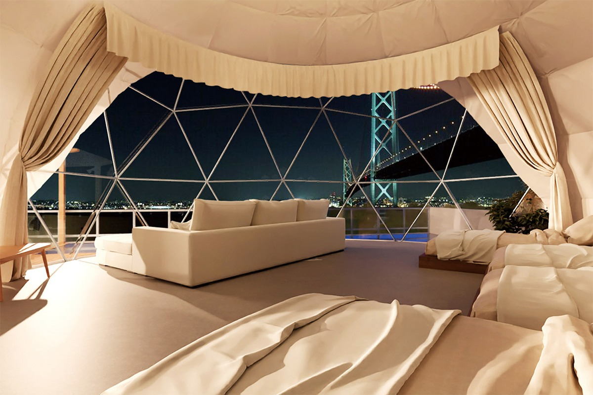
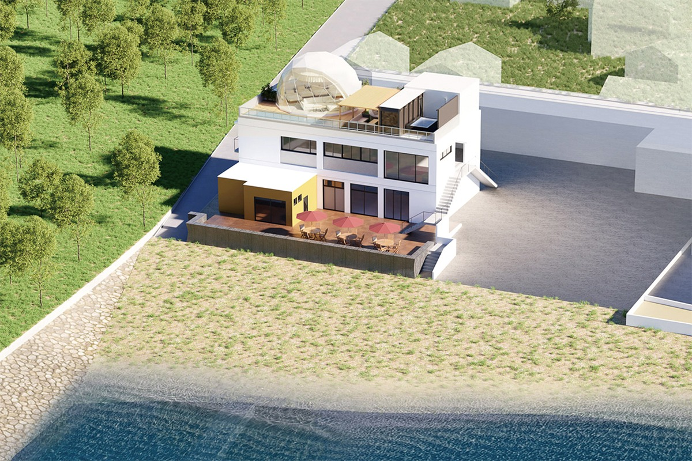
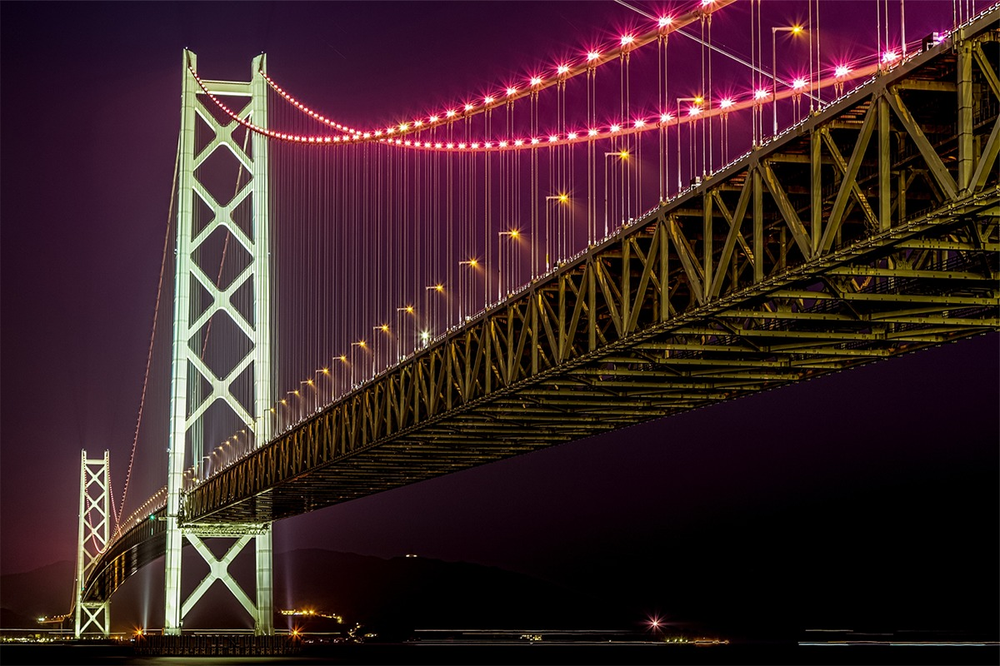
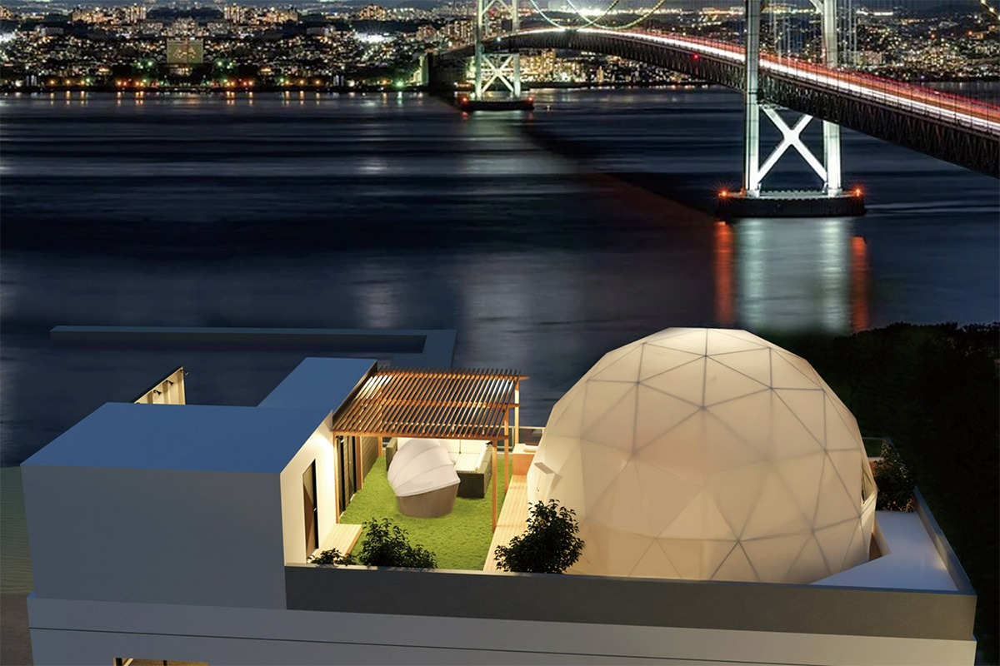
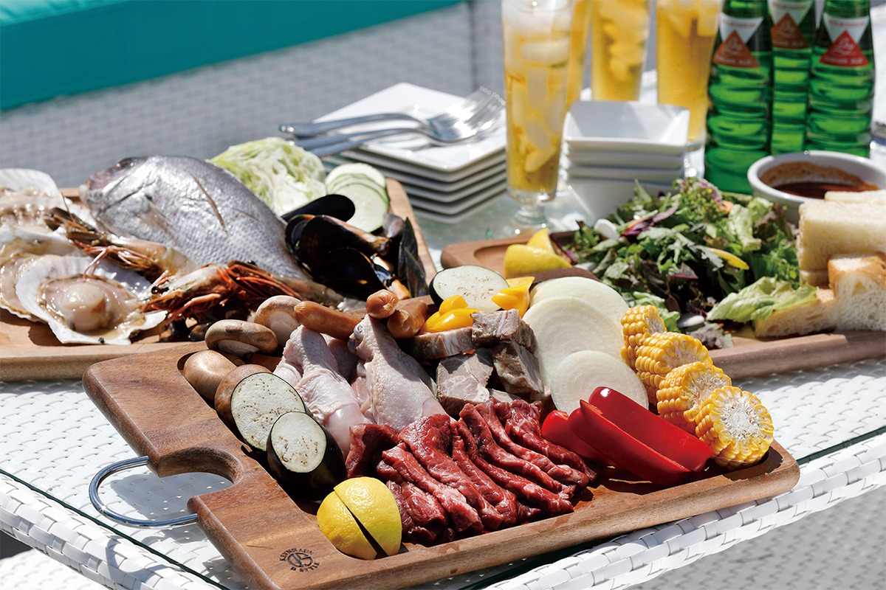
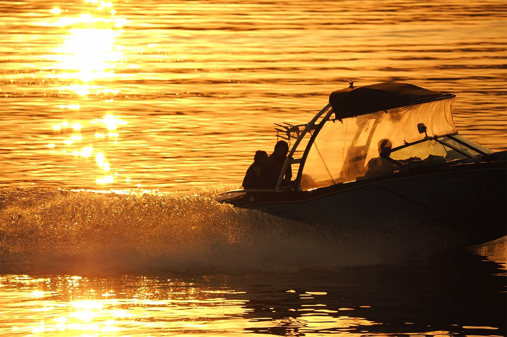
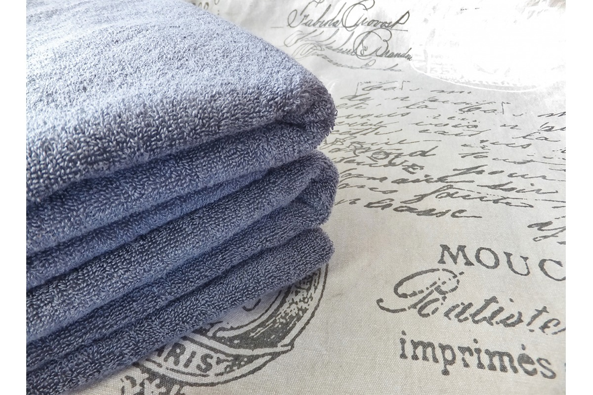

Префектура Хёго · Авадзи · ночлег
Глэмпинг «Сазанами» на Авадзи: купол на крыше напротив моста Акаси-Кайкё

На северной оконечности острова Авадзи, у самого моста Акаси-Кайкё, на крыше пляжного комплекса стоит один большой купол. Ночевать в нём можно только одной компании за раз, и весь вид на пролив по вечерам достаётся ей.
Место
Купол на третьем этаже
Остров Авадзи лежит во Внутреннем Японском море между Кобе и островом Сикоку и входит в префектуру Хёго. С материком его связывает мост Акаси-Кайкё, и первое, что видят приезжие, это посёлок Ивая на северной оконечности острова. Здесь, у пляжа, стоит курортный комплекс «Мун Джелли» (MOON JELLY), а на его крыше в августе 2021 года открылся глэмпинг «Сазанами». Название переводится как «рябь на воде».

На крыше установили один купол диаметром 8 метров. Внутри работают кондиционер и отопление, так что жить в нём удобно в любое время года. В 2021 году это был первый в Японии глэмпинг с ночёвкой в куполе на крыше здания. Принимают одну компанию в сутки.
Вид
Мост, который светится жемчугом
Отсюда открывается вид на синее море и небо, на суда, которые идут через пролив, а вечером на подсвеченный мост и огни Кобе на противоположном берегу. Мост Акаси-Кайкё в 2021 году был самым длинным висячим мостом в мире, и тогда же «Сазанами» был ближайшим к нему местом для ночлега. Пролив и мост видно не только с открытой террасы, но и из самого купола и даже из душевой.

У моста есть второе имя, «Жемчужный мост»: вечерние огни на его тросах напоминают жемчужные бусы. Сочетаний цветов у подсветки 28, они меняются по сезонам, поэтому вид с крыши каждый раз немного другой.
После заката мост и пролив остаются в полном распоряжении гостей. За отдельную плату можно воспользоваться ванной на крыше «Мун Джелли» и полежать в горячей воде, глядя на ночные огни и звёзды.
Уединение
Без соседей и без стойки регистрации
На глэмпингах с несколькими шатрами часто мешают шум соседей и очередь в общих зонах. Здесь купол один, и никто больше на крыше не живёт.

Вход на крышу третьего этажа закрывается электронным замком. За ним у гостей своя душевая и туалет, и об этом подумали прежде всего ради женщин и семей с детьми. Заселение и выезд проходят без персонала: с сотрудниками можно вообще не встречаться от приезда до отъезда.
Еда
Ужин внизу или в округе
Авадзи в древности называли «Микэцукуни», землёй, которая поставляла продукты к императорскому столу, и остров до сих пор славится морепродуктами и овощами. В «Сазанами» не кормят, поэтому меню гости выбирают сами. В том же здании «Мун Джелли» на втором этаже работает суши-бар в токийском стиле эдомаэ, на первом итальянский ресторан. Рядом есть кафе, придорожная станция с местными продуктами и другие рестораны.

Тем, кто без барбекю не представляет глэмпинга, можно заказать его в «Мун Джелли». Вся еда комплекса подаётся только по предварительной записи через сайт «Мун Джелли».
Море
Каяки, сапы и костёр на пляже
На синее море Авадзи приятно просто смотреть, но «Мун Джелли» предлагает и способы в нём побывать. Здесь есть прозрачные каяки и сапборды, а за катером можно прокатиться на банане или вейкборде. Справятся и новички. После заката на пляже разрешают разводить костёр и запускать фейерверки.

Удобства
Как в отеле
Чтобы спокойно себя чувствовали и те, кто не любит походный быт, в куполе приготовили полотенца, зубные щётки и другие принадлежности на уровне хорошего отеля.

Купол рассчитан на компанию от одного до восьми человек. В 2021 году ночь стоила от 116 000 иен.
Глэмпинг «Сазанами»
- Адрес
- префектура Хёго, Авадзи, Ивая, 1871, крыша комплекса «Мун Джелли»
- Номера
- один купол, 50 м² внутри, 158 м² вместе с террасой, от 1 до 8 человек
- Цены / Вход
- от 116 000 иен